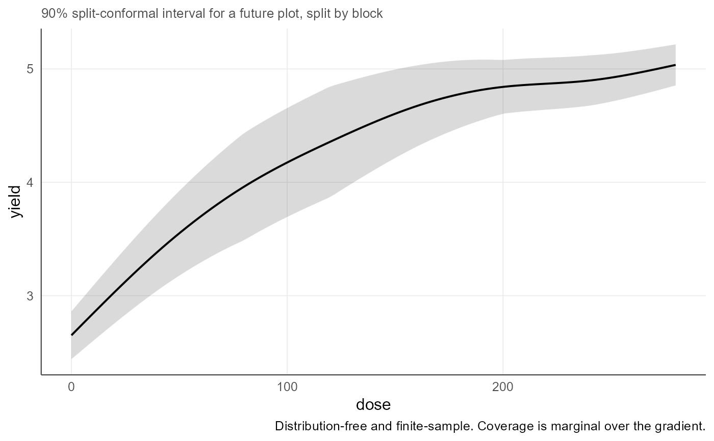

Distribution-free prediction intervals by split conformal inference
agri_np_conformal.RdPrediction intervals with finite-sample marginal coverage that does not depend on the response distribution nor on the regression engine, with a calibration split that respects the declared block.
Arguments
- object
An
agri_np_reg_fit, or anagri_np_conformalresult foragri_np_coverage().- newdata
Prediction data. Defaults to a grid over the observed range.
- level
Target coverage.
- split_by
Variable defining exchangeable groups for the calibration split. Defaults to the block declared in the fit.
- scope
Whether the future observation belongs to an observed block or to a block that was not observed. See details.
- prop
Share of groups, or of rows within group, used to refit the model. The rest calibrates.
- seed
Random seed for the split.
- n
Grid size when
newdatais omitted.- fixed
Values at which other covariates are held.
- normalize
If
TRUE, residuals are scaled by a local dispersion estimate.- data
Data with observed responses, for
agri_np_coverage().- ...
Passed to
agri_np_conformal().
Details
The bootstrap bands of agri_np_bootstrap describe where the fitted
curve lies. They say nothing, with guarantee, about where the next
plot will fall. Split conformal prediction does: for exchangeable data the
interval satisfies \(P(Y_{new} \in \Gamma) \ge 1 - \alpha\) in finite samples,
for any engine and any response distribution.
The procedure refits the engine on one part of the data, computes absolute residuals on the held-out part, and adds the appropriate empirical quantile of those residuals to the prediction. The quantile uses the finite-sample correction \(\lceil (n_{cal}+1)(1-\alpha)\rceil / n_{cal}\), which is what turns an empirical quantile into a guarantee.
Exchangeability is the whole question, and it is where the declared design enters. Two scopes are available, and they answer different questions:
"within_block"The future plot belongs to a block that was observed. Randomization happened inside blocks, so plots within a block are exchangeable. The split is stratified, every block contributes to both parts, and the block term stays in the model.
"new_block"The future plot belongs to a block, field or season that was not observed. Exchangeability is then claimed at block level, whole blocks are held out, and the block term must leave the model because a block-specific effect is not estimable outside the observed blocks. The interval is wider, and it should be: it now carries the between-block variation.
Passing split_by = NULL asserts that individual plots are exchangeable,
which a declared block denies. It is allowed, because the analyst may have a
reason, but it is a scientific claim and not a default.
Coverage is marginal, averaged over the gradient. It does not promise the
stated coverage separately at every rate. normalize = TRUE redistributes
the width across the gradient, wider where the response is noisier, without
changing what is guaranteed.
Value
agri_np_conformal() returns a data frame of class
agri_np_conformal with the grid, the prediction and the conformal limits.
agri_np_coverage() returns a list with the target and empirical coverage,
coverage by block, and the mean interval width.
References
Vovk, V., Gammerman, A. and Shafer, G. (2005). Algorithmic Learning in a Random World. Springer.
Lei, J., G'Sell, M., Rinaldo, A., Tibshirani, R. J. and Wasserman, L. (2018). Distribution-free predictive inference for regression. Journal of the American Statistical Association, 113(523), 1094-1111. doi:10.1080/01621459.2017.1307116
Examples
data(agri_dose)
# Example 1: an interval for a future plot in one of the observed blocks
if (requireNamespace("mgcv", quietly = TRUE)) {
f <- agri_np_regression(yield ~ dose, agri_dose, method = "gam", block = block)
cf <- agri_np_conformal(f, newdata = agri_dose, level = 0.90, seed = 1)
cf
}
#> agriRank split-conformal prediction intervals
#> Target coverage: 90%
#> Split unit: block
#> Scope: a future plot in an observed block
#> Fitting rows: 20 Calibration rows: 20
#> Conformal quantile: 0.3502
#>
#> block dose yield fit lower upper
#> B1 0 2.612 2.650 2.300 3.001
#> B1 40 3.426 3.388 3.038 3.738
#> B1 80 3.797 3.961 3.611 4.312
#> B1 120 4.423 4.358 4.008 4.709
#> B1 160 4.634 4.673 4.322 5.023
#> B1 200 4.947 4.842 4.491 5.192
#> ... 34 more rows
#>
#> The interval covers a future plot, not the fitted curve, and the coverage
#> is marginal over the gradient rather than guaranteed at each single rate.
# Example 2: empirical coverage, overall and by block
if (requireNamespace("mgcv", quietly = TRUE)) {
cv <- agri_np_coverage(cf, data = agri_dose)
c(target = cv$target, empirical = cv$empirical, width = cv$mean_width)
cv$by_block
}
#> block coverage n
#> 1 B1 1.000 8
#> 2 B2 0.750 8
#> 3 B3 0.875 8
#> 4 B4 1.000 8
#> 5 B5 1.000 8
# Example 3: the same field, or a field never visited? The second question
# carries between-block variation and the interval widens accordingly.
if (requireNamespace("mgcv", quietly = TRUE)) {
cw <- agri_np_conformal(f, newdata = agri_dose, level = 0.90, seed = 1,
scope = "within_block")
cn <- agri_np_conformal(f, newdata = agri_dose, level = 0.90, seed = 1,
scope = "new_block")
c(observed_block = mean(cw$upper - cw$lower),
new_block = mean(cn$upper - cn$lower))
}
#> observed_block new_block
#> 0.7003093 1.3522316
# Example 4: three kinds of uncertainty at three nitrogen rates. The first two
# describe the fitted curve; only the conformal one describes a future plot.
if (requireNamespace("mgcv", quietly = TRUE)) {
nd <- data.frame(dose = c(80, 160, 240),
block = factor("B3", levels = levels(agri_dose$block)))
an <- as.data.frame(agri_np_predict(f, nd, interval = "confidence"))
bo <- as.data.frame(agri_np_bootstrap(f, newdata = nd, B = 199, seed = 2))
co <- as.data.frame(agri_np_conformal(f, newdata = nd, level = 0.95, seed = 1))
data.frame(dose = nd$dose,
analytic = an$upper - an$lower,
bootstrap = bo$upper - bo$lower,
conformal = co$upper - co$lower)
}
#> Warning: factor levels B3 not in original fit
#> Warning: factor levels B3 not in original fit
#> Warning: factor levels B3 not in original fit
#> Warning: factor levels B3 not in original fit
#> Warning: factor levels B3 not in original fit
#> Warning: factor levels B3 not in original fit
#> Warning: factor levels B3 not in original fit
#> Warning: factor levels B3 not in original fit
#> Warning: factor levels B3 not in original fit
#> Warning: factor levels B3 not in original fit
#> Warning: factor levels B3 not in original fit
#> Warning: factor levels B3 not in original fit
#> Warning: factor levels B3 not in original fit
#> Warning: factor levels B3 not in original fit
#> Warning: factor levels B3 not in original fit
#> Warning: factor levels B3 not in original fit
#> Warning: factor levels B3 not in original fit
#> Warning: factor levels B3 not in original fit
#> Warning: factor levels B3 not in original fit
#> Warning: factor levels B3 not in original fit
#> Warning: factor levels B3 not in original fit
#> Warning: factor levels B3 not in original fit
#> Warning: factor levels B3 not in original fit
#> Warning: factor levels B3 not in original fit
#> Warning: factor levels B3 not in original fit
#> Warning: factor levels B3 not in original fit
#> Warning: factor levels B3 not in original fit
#> Warning: factor levels B3 not in original fit
#> Warning: factor levels B3 not in original fit
#> Warning: factor levels B3 not in original fit
#> Warning: factor levels B3 not in original fit
#> Warning: factor levels B3 not in original fit
#> Warning: factor levels B3 not in original fit
#> Warning: factor levels B3 not in original fit
#> Warning: factor levels B3 not in original fit
#> Warning: factor levels B3 not in original fit
#> Warning: factor levels B3 not in original fit
#> Warning: factor levels B3 not in original fit
#> Warning: factor levels B3 not in original fit
#> Warning: factor levels B3 not in original fit
#> Warning: factor levels B3 not in original fit
#> Warning: factor levels B3 not in original fit
#> Warning: factor levels B3 not in original fit
#> Warning: factor levels B3 not in original fit
#> Warning: factor levels B3 not in original fit
#> Warning: factor levels B3 not in original fit
#> Warning: factor levels B3 not in original fit
#> Warning: factor levels B3 not in original fit
#> Warning: factor levels B3 not in original fit
#> Warning: factor levels B3 not in original fit
#> Warning: factor levels B3 not in original fit
#> Warning: factor levels B3 not in original fit
#> Warning: factor levels B3 not in original fit
#> Warning: factor levels B3 not in original fit
#> Warning: factor levels B3 not in original fit
#> Warning: factor levels B3 not in original fit
#> Warning: factor levels B3 not in original fit
#> Warning: factor levels B3 not in original fit
#> Warning: factor levels B3 not in original fit
#> Warning: factor levels B3 not in original fit
#> Warning: factor levels B3 not in original fit
#> Warning: factor levels B3 not in original fit
#> Warning: factor levels B3 not in original fit
#> Warning: factor levels B3 not in original fit
#> Warning: factor levels B3 not in original fit
#> Warning: factor levels B3 not in original fit
#> Warning: factor levels B3 not in original fit
#> dose analytic bootstrap conformal
#> 1 80 0.3705168 0.2842573 0.9333657
#> 2 160 0.3664069 0.1709322 0.9333657
#> 3 240 0.3751945 0.1699402 0.9333657
# Example 5: locally scaled width, and the figure
if (requireNamespace("mgcv", quietly = TRUE) &&
requireNamespace("ggplot2", quietly = TRUE)) {
cn2 <- agri_np_conformal(f, level = 0.90, seed = 1, normalize = TRUE)
plot(cn2)
}
